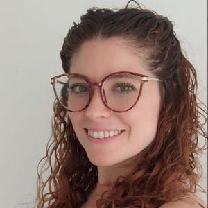

Psicóloga • MP 2012 • Psicoanálisis

Lic. Julieta De Battista es Licenciada en Psicología (MP 2012) con una práctica sostenida en la teoría y técnica psicoanalítica. Atención presencial en Bahía Blanca y virtual desde donde estés, para adultos y jóvenes adultos.
El psicoanálisis propone un modo de trabajo respetuoso de tus tiempos. Un espacio para escucharte, entenderte y encontrar tu propio camino.
Acompañamiento terapéutico desde la orientación psicoanalítica. Un espacio de escucha profunda para trabajar lo que más te pesa, a tu propio ritmo y desde donde estés.
Consultorio en Bahía Blanca para quienes buscan un encuentro cara a cara. Un espacio cálido y confidencial para iniciar o continuar tu proceso terapéutico.
Sesiones online para que la distancia no sea un obstáculo. Desde cualquier parte del país, con la misma presencia y compromiso de siempre.
Atención especializada para personas mayores de 18 años que atraviesan momentos de angustia, confusión, duelos o simplemente buscan entenderse mejor.
Un primer encuentro para conocernos, que cuentes lo que te trae y veamos juntos si podemos trabajar. Sin compromiso, con total confidencialidad.
No hay apuro ni recetas. La terapia es un camino singular que se construye sesión a sesión. Me interesa generar un vínculo de confianza real para trabajar juntos.
Julieta trabaja desde un lugar honesto, cercano y comprometido. El psicoanálisis no es una receta rápida — es un proceso singular que busca cambios con raíces profundas y duraderas.
Escribime por WhatsApp o completá el formulario y te respondo para coordinar tu primera consulta sin compromiso.
291 641-6648
Bahía Blanca · También virtual
@psicologa.debattista